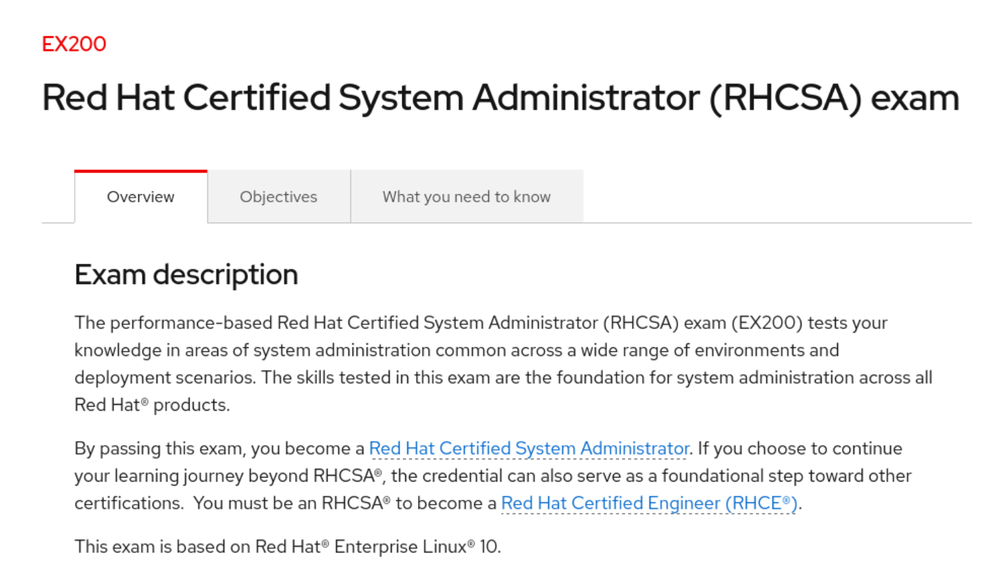
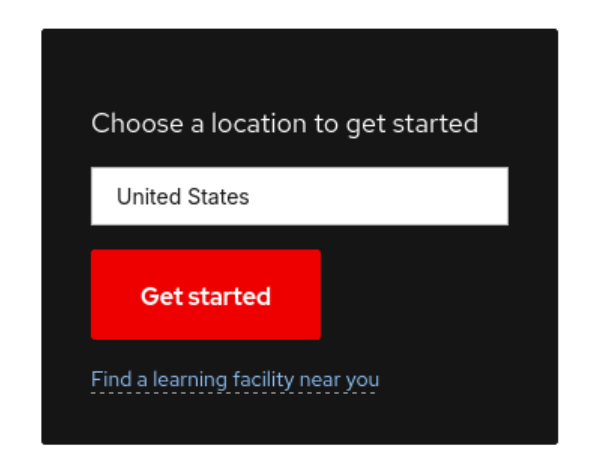
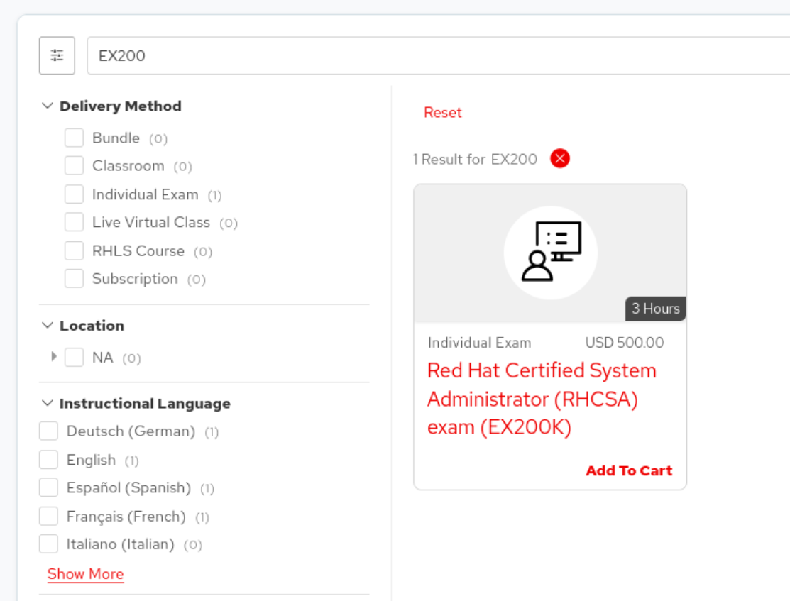
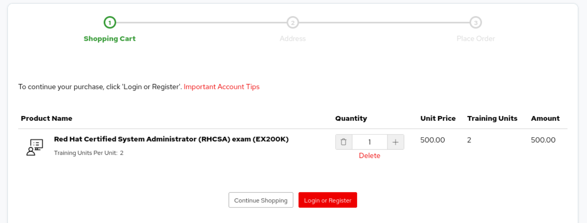
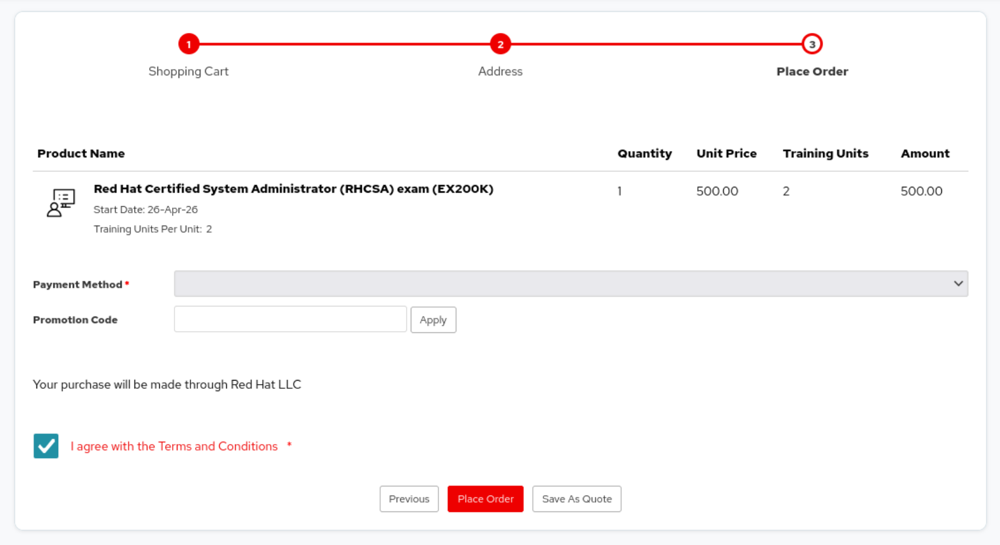

3 RHCSA Exam
At this point it’s probably a good idea to navigate to the RHCSA (EX200) exam page and familiarize yourself with the exam. Click on the Overview, Objectives, and What you need to know tabs and read through the information there. Bookmark this page in your browser so that you can refer back to it later.

Red Hat updates the exam objectives and other information on a regular basis so this page is the best source of truth in terms of what is covered in the exam.
This book will make a best effort to cover the exam objectives (and then some) and if you’ve gained proficiency in the topics covered here then this should be more than adequate preparation to pass the exam. That being said, this book makes no guarrantees.
Note that as a rule Red Hat doesn’t endorse any preperatory materials or guides other than it’s own. What I can say is that myself and plenty of other people have used primarily 3rd party books, courses, and other study resources outside of the official Red Hat courses and have been able to pass the RHCSA exam.
3.1 Exam prep costs
Here’s a break-down of estimated costs associated with exam prep for the RHCSA through Red Hat’s official courses and materials.
| Item | Code | Estimated Cost (USD) | Notes |
|---|---|---|---|
| RHCSA Exam Voucher | EX200 | $500 (as of this writing) | 12-month voucher validity. No free retake — failure means purchasing a new voucher. |
| Red Hat System Administration I | RH124 | ~$3,500–$5,000 | Instructor-led, ~5 days. Foundational course. |
| Red Hat System Administration II | RH134 | ~$3,500–$5,000 | Instructor-led, ~5 days. Builds on RH124. |
| RHCSA Rapid Track | RH199 | ~$3,500–$5,000 | Combines RH124 + RH134 at accelerated pace; assumes prior Linux experience. |
| RHLS — Single Course | — | ~$1,500–$2,500 / yr | One course of choice, ~100 lab hours, 1 exam + 1 retake included. |
| RHLS — Standard | — | ~$5,500–$7,500 / yr | Full course catalog, 400 lab hours, 5 exam attempts + 2 retakes, self-paced only. |
| RHLS — Premium | — | ~$7,000–$8,000 / yr | Everything in Standard, plus live instructor-led virtual classes. |
3.1.1 Three realistic paths to RHCSA
- Voucher only — $500 (as of this writing). Self-study with books, exam objectives, and a home lab.
- RHLS Self-study course + lab + exam voucher — ~$2,000–$2,500 total. Adds one official Red Hat course, lab access, and an included exam voucher with retake.
- Full instructor-led path — ~$4,000–$5,500 total (RH199 + EX200), or ~$7,500–$10,500 if taking RH124 and RH134 separately.
For most people it only really makes sense to pay for the official Red Hat courses or a Red Hat Learning Subscription (RHLS) if it’s being reimbursed by their employer. Fortunately the RHCSA exam is common enough that there are plenty of other resources available to help prepare for the exam, such as this book. If your employer reimburses or you have access to a Red Hat Learning Subscription through a Red Hat Partner then the official Red Hat courses are a solid prep resource. Access to Red Hat’s labs can save time setting up your own. Although, I would argue that setting up your own lab environment is a helpful skill to have for future learning and experimentation. We’ll cover setting up and automating a reproducible lab environment in [chapter ?].
3.2 RHCSA Exam Objectives
Refer to the Objectives tab on the RHCSA EX200 page.
3.3 RHCSA Exam Registration
If you already know that you will sit the RHCSA exam then it might make sense for you to purchase an exam voucher right now. Exam voucher’s are good for a year from the purchase date. Putting money towards a voucher, especially if it’s coming out of your own pocket (or if your employer only reimburses successful completion, some are like this), can solidify your commitment to studying for and ultimately taking the RHCSA exam. This plays on our human psychology which has a propensity towards loss aversion. Perhaps peradoxically this is stronger than our attraction to acquisitions. We can use this to propel us towards the RHCSA goal. As a rule of thumb, I recommend purchasing a voucher if you think you’re likely to sit the exam in the next 6 months.
If you’re paying out of pocket ask around if anybody you know who’s certified has a referral code. Red Hat usually will email a referral code good for 15% off after successful completion of any of their certification exams (3 uses). Sometimes people will share their code in the /r/RedHat subreddit, so it can be worth posting or checking there. (Or you can email me and if I have one I’ll share it.)
3.3.1 How to purchase a voucher
The simplest way to purchase an exam voucher is from the RHCSA exam page. Click the Get started button in the side-bar on the right (it may be in a different location depending on how your browser renders the page).

This should bring you to the training catalog page with the EX200 exam showing.

Click Add To Cart. This should bring up your shopping cart. If you’re not logged in, you’ll be prompted to Login or Register.

Click the Login or Register button and login again. Then, click through the prompts and add your company, billing address, and payment information. Agree to terms and Place Order.

You should receive an email confirmation of your purchase. You may need to wait until your purchase is processed to register for the exam.